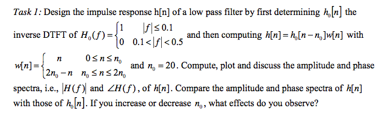
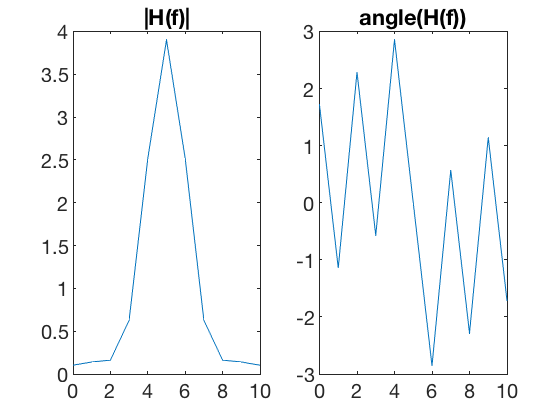
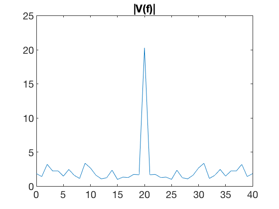
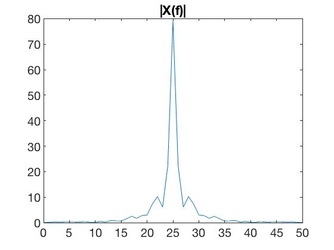
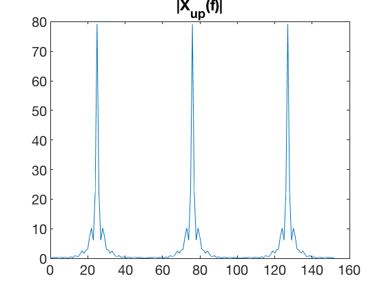
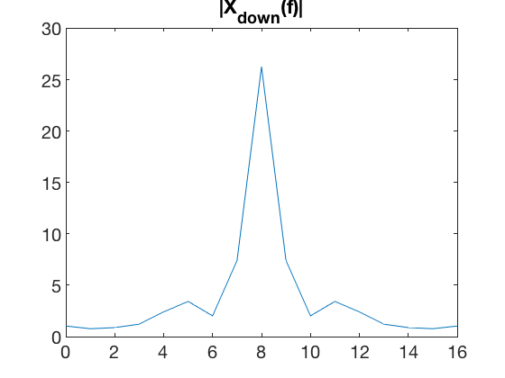

Lab 6 Christian Ardito SID: 861140154 Jesse Layman SID: 861135479
Professor: Yingbo Hua, TA: Qiping Zhu, EE110B-023

Contents
task 1
clear all close all n0 = 5; n = 0:2*n0; h0 = 1/5*sinc((n-n0)/5); w = [0:(n0-1), n0:-1:0]; %plot(0:length(w)-1,w) %figure %plot(n,h0) h = h0.*w; %figure %plot(0:length(h)-1,h); figure subplot(1,2,1) H = fftshift(fft(h)); plot(0:length(H)-1,abs(H)) title('|H(f)|') subplot(1,2,2) plot(0:length(H)-1,angle(H)) title('angle(H(f))')
task2
%close all v = rand(1,41); x = conv(v,h); V = fftshift(fft(v)); %plot the DTFT of v[n] figure plot(0:length(V)-1,abs(V)) title('|V(f)|') X = fftshift(fft(x)); %plot the DTFT of x[n] figure plot(0:length(X)-1,abs(X)) title('|X(f)|') figure x1 = upsample(x,3); X = fftshift(fft(x1)); plot(0:length(X)-1,abs(X)) title('|X_u_p(f)|') figure x2 = downsample(x,3); X = fftshift(fft(x2)); plot(0:length(X)-1,abs(X)) title('|X_d_o_w_n(f)|')   